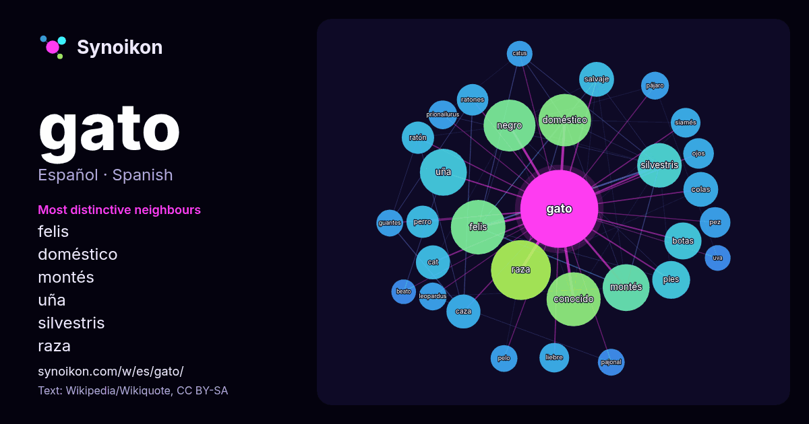

Español · palabra popular
gato
“cat” · Las palabras encontradas a su alrededor en 1214 apariciones de Wikipedia, Wikiquote.

Vecinos más característicos
- felis 55×
- doméstico 47×
- montés 41×
- uña 40×
- silvestris 37×
- raza 35×
- negro 30×
- botas 25×
- cat 21×
- salvaje 21×
- conocido 20×
- ratón 19×
- colas 19×
- caza 19×
- ratones 18×
- pies 18×
- perro 18×
- siamés 17×
- liebre 17×
- prionailurus 16×
× = cuántas veces más que en el texto general de Wikipedia.
Vecinos más frecuentes
- raza 65
- felis 54
- conocido 53
- doméstico 50
- negro 49
- montés 40
- uña 40
- silvestris 36
- nombre 29
- pies 26
- botas 25
- colas 22
- salvaje 22
- cat 21
- caza 21
- película 21
- perro 19
- ratón 19
- llamado 18
- ratones 18
En contexto
- El gato doméstico (Felis catus) llamado comúnmente gato, y de forma coloquial cucho, minino, michino o michi, y algunos nombres más, es un mamífero carnívoro Wikipedia snippets · Felis catus
- Reconoce numerosas variantes: gato cuyano gato encadenado, gato patriótico, gato polqueado, gato cordobés gato correntino El gato, al igual que la huella y Wikipedia snippets · Gato (danza)
- Don Gato y su pandilla (en inglés: Top Cat) es una serie de dibujos animados para la TV de treinta episodios, ideada y producida por Hanna-Barbera en el Wikipedia snippets · Don Gato y su pandilla
- El gato, gata, cric, o jack, es una máquina empleada para la elevación de cargas pesadas mediante el accionamiento manual de una manivela o una palanca Wikipedia snippets · Gato (dispositivo)
- El siamés es una raza de gato. Dentro de dicha raza se distinguen dos variedades: por un lado el siamés moderno, y por otro el siamés tradicional o Thai Wikipedia snippets · Gato siamés
- El Gato de Cheshire ("Cheshire Cat" en su versión original en inglés), también llamado Gato de los Deseos, Gato Risón o Gato Sonriente entre otros nombres Wikipedia snippets · Gato de Cheshire
- El gato común europeo es una raza de gato, como su nombre indica, originario de Europa, probablemente descendiente del gato montés africano (Felis silvestris Wikipedia snippets · Gato común europeo
- El gato en el sombrero (también conocido como El gato garabato, El gato ensombrerado o El gato con sombrero) es un libro infantil escrito por Dr. Seuss Wikipedia snippets · El gato en el sombrero
Más palabras
- agua
- arte
- bosque
- caballo
- camino
- campana
- canción
- ciencia
- ciudad
- clima
- comida
- corazón
- desierto
- dinero
- dios
- espejo
- estrella
- familia
- fuerza
- historia
- invierno
- isla
- jardín
- lengua
- lluvia
- madre
- mapa
- miel
- montaña
- muerte
- naturaleza
- oro
- otoño
- pan
- perro
- puente
- reloj
- sal
- salud
- silencio
- sombra
- tiempo
- tormenta
- trabajo
- tren
- té
- verano
- verdad
- vida
Precalculado el 2026-10-09 con los ajustes predeterminados (±5 palabras, corpus mediano). El mapa interactivo puede actualizarlo con datos en vivo.
Interfaz traducida automáticamente; se agradecen correcciones.